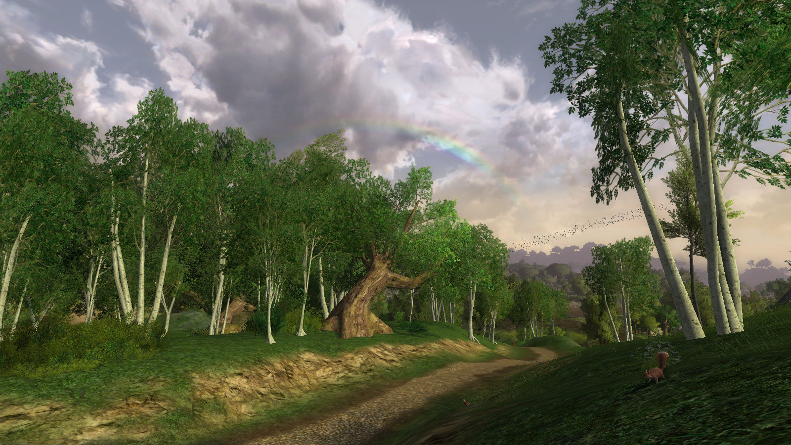
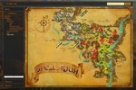
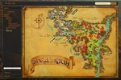
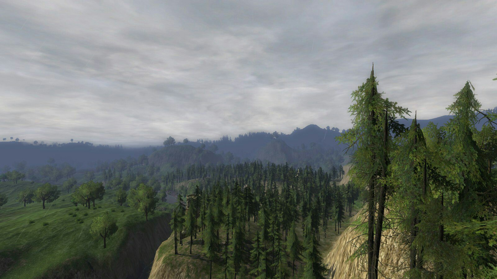
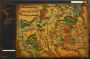
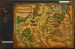
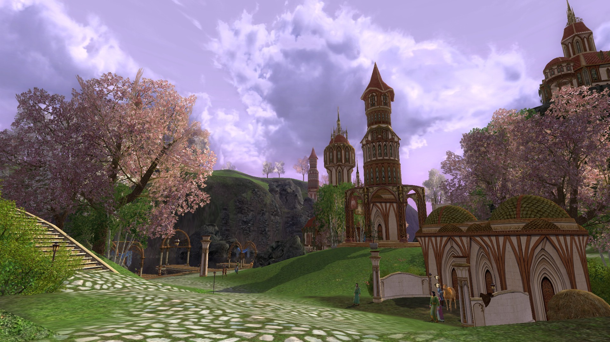

Шир

Шир, и-Дранн, Сузат или попросту Удел — край давно забытый почти всеми, кроме, пожалуй, части хоббитов, дивного народца, называющего эти края своим домом.
Некогда все эти земли были заповедными охотничьими угодьями самих Королей, восседавших в Аннуминасе. Быть может, именно поэтому в Шире почти нет древних руин и развалин, окромя пары возвышающихся башен и моста через Брендивин. Впрочем, практичные хоббиты тоже приложили руку к их разрушению, ремонтируя дороги и возводя ограды для своих садов.

- Встречаемые ресурсы:
- Древесина
- Руды



Земли Бри

Бри — образец мирного и спокойного поселения, которое возможно найти только к западу от Мглистых Гор. Здесь стражники не пропадают по ночам, а дозорные не страшатся дремать в свою смену. Ныне это старый процветающий городок из камня на перепутье всех западных торговых путей, благодаря чему сюда стекаются и гномы, и фермеры, и купцы, и даже непоседливые хоббиты.
Здесь же, в Землях Бри, находится самое восточное поселение хоббитов Шира — Забрендия с её Отпорной Городьбой, но немало полуросликов — и даже гномов — осели и в предместьях Бри: в менее приметных Пристенках, Овражках, да четвудском Арчете.

- Встречаемые ресурсы:
- Древесина
- Руды



Эред Луин

Эред Луин (Синие горы) — край сияющих снежных вершин и цветущих зеленых долин, древние горы, где ещё можно найти руины величественных гномьих городов Первой эпохи, и укромные долины, скрывающие эльфийские гавани.

- Встречаемые ресурсы:
- Древесина
- Руды
Пустоши
 И куда вы теперь?..
Значит, пойдете через Пустоши. Вам лучше побыстрее пересечь их, если вы только не любите ночевать под открытым небом. Впрочем, в сами Пустоши отправляются единицы, для редких путников они — всего лишь часть долгой дороги. И все же, у этих земель долгая история, а значит, и жители там найдутся.
И куда вы теперь?..
Значит, пойдете через Пустоши. Вам лучше побыстрее пересечь их, если вы только не любите ночевать под открытым небом. Впрочем, в сами Пустоши отправляются единицы, для редких путников они — всего лишь часть долгой дороги. И все же, у этих земель долгая история, а значит, и жители там найдутся.- Встречаемые ресурсы:
- Древесина
- Руды